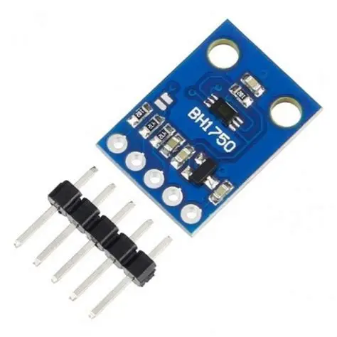

Identificação
| Nome do sensor | BH1750 |
|---|---|
| Categoria | Luminosidade |
| Tipo de sinal | Digital — barramento I2C |
Conceito
O BH1750 (também identificado como GY-302 na forma de módulo) é um sensor digital de luz ambiente fabricado pela ROHM Semiconductor. Sua grande vantagem sobre o LDR é entregar o valor de iluminância já convertido em lux, a unidade fotométrica padrão, sem necessidade de calibração, divisor de tensão ou conversor analógico-digital. Além disso, sua resposta espectral é próxima à da visão humana, o que torna a leitura muito mais fiel à percepção real de claridade do ambiente do que a de um sensor puramente resistivo.

Princípio de funcionamento
O componente combina um fotodiodo sensível à luz visível com um amplificador de transimpedância, que converte a corrente gerada pelo fotodiodo em tensão, e um conversor analógico-digital de 16 bits. Um circuito lógico interno aplica o fator de conversão e disponibiliza o resultado em lux nos registradores acessíveis pelo barramento I2C. O tempo de integração da medição pode ser ajustado por software, o que permite equilibrar sensibilidade e velocidade de resposta: janelas maiores melhoram a leitura em ambientes escuros, enquanto janelas curtas evitam saturação sob luz intensa.
Principais especificações técnicas
| Faixa de medição | 1 lx a 65.535 lx |
|---|---|
| Resolução | 1 lx (modo padrão) e 0,5 lx (modo de alta resolução) |
| Tensão de alimentação | 2,4 V a 3,6 V (módulos GY-302 aceitam 3,3 V e 5 V) |
| Consumo | Cerca de 120 µA em medição e 1 µA em modo de espera |
| Tempo de medição | Aproximadamente 120 ms em alta resolução; 16 ms no modo rápido |
| Endereços I2C | 0x23 (pino ADDR em nível baixo) ou 0x5C (nível alto) |
| Resposta espectral | Próxima à curva de sensibilidade do olho humano |
| Influência de infravermelho | Muito baixa, com boa rejeição a fontes IR |
Tipo de sinal
Digital — barramento I2C
A comunicação é feita pelo barramento I2C, usando as linhas SDA (dados) e SCL (clock), ambas com resistores de pull-up, geralmente já presentes nos módulos. O mestre envia um comando de configuração — modo contínuo ou de disparo único, alta ou baixa resolução — e em seguida lê 2 bytes contendo o valor bruto, que é dividido por 1,2 para obter a iluminância em lux. Como o endereço é selecionável entre dois valores, é possível ter dois BH1750 no mesmo barramento, convivendo com outros dispositivos I2C, como displays e sensores de pressão.
Aplicações industriais e IoT
- Controle automático de iluminação em galpões, escritórios e iluminação pública;
- Ajuste de brilho de painéis, displays e IHMs em função da luz ambiente;
- Monitoramento de luminosidade em estufas e sistemas de cultivo indoor;
- Sistemas de economia de energia e automação predial (IoT em edifícios);
- Verificação de níveis mínimos de iluminação exigidos por normas de segurança do trabalho;
- Estações ambientais e projetos de monitoramento climático.
Exemplo de utilização em um projeto
Em um projeto de eficiência energética de um galpão industrial, módulos BH1750 instalados junto às luminárias medem a iluminância sobre as bancadas. Um ESP8266 lê o valor em lux a cada 10 segundos e regula por PWM o driver das lâmpadas LED, mantendo os 500 lx exigidos pela norma independentemente da luz natural que entra pelas telhas translúcidas ao longo do dia. Os dados são enviados a um painel na nuvem, que calcula a economia de energia obtida em relação à operação com as luminárias sempre em potência máxima.
#include <Wire.h>
#include <BH1750.h>
BH1750 luximetro;
const int PINO_LED = 5; // saida PWM do driver
const float META_LUX = 500.0;
void setup() {
Serial.begin(115200);
Wire.begin();
luximetro.begin(BH1750::CONTINUOUS_HIGH_RES_MODE);
pinMode(PINO_LED, OUTPUT);
}
void loop() {
float lux = luximetro.readLightLevel();
Serial.print(lux);
Serial.println(" lx");
// completa apenas a luz que falta para atingir a meta
int potencia = constrain(map(lux, 0, META_LUX, 255, 0), 0, 255);
analogWrite(PINO_LED, potencia);
delay(10000);
}